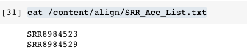
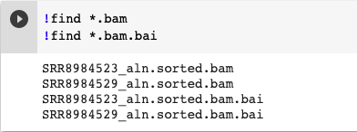
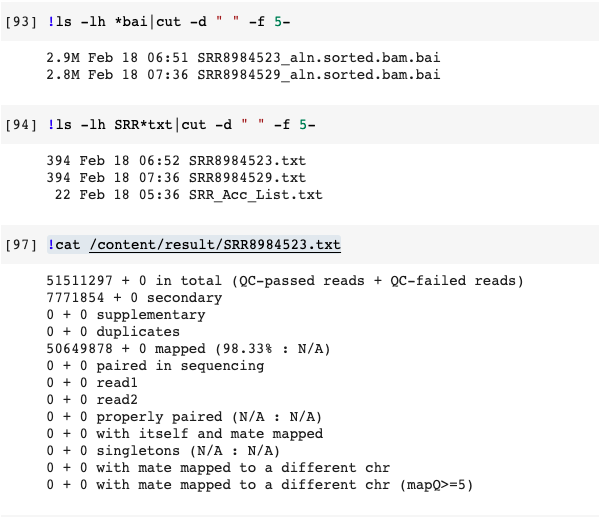
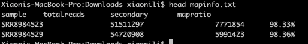

Google Colab is a free service providing interactive computing resources via a user interface, runs on Google Cloud Platform (GCP), and provides free access to GPUs and TPUs.
RNA sequence is a technique that can examine the quantity and sequences of RNA in a sample using next generation sequencing (NGS). It analyzes the transcriptome of gene expression patterns encoded within the RNA.
Then, how to perform RNA sequence analysis in Google Colab?
Prerequisites
-
Install condas, follow my article here.
-
Continued, setup the channels for conda.
1 2 3 4!conda config --add channels https://mirrors.tuna.tsinghua.edu.cn/anaconda/pkgs/free !conda config --add channels https://mirrors.tuna.tsinghua.edu.cn/anaconda/cloud/conda-forge !conda config --add channels https://mirrors.tuna.tsinghua.edu.cn/anaconda/cloud/bioconda !conda config --set show_channel_urls yes
Download FastQ files with aspera
-
Conda install aspera
1 2 3 4!conda install -y -c hcc aspera-cli #checkup !which ascp -
Check and cat the path for
asperaweb_id.dsa.openssh1!cat /usr/local/etc/asperaweb_id_dsa.openssh -
To get the SRA address for GSE130437
- SRA.
- Search for
GSE130437, herein, it’s the numberPRJNA540259, which got from ncbi. - Click on
Titleand choose all results. - Add to collection.
- Click on
#nsaved datasets(Herein, I just choose 2 of them: forSRR8984523.fastq.gzandSRR8984529.fastq.gz). - Pull down to click on
FastQ Downloads. - Choose
Bash script for downloading FastQ files. - Creat Newfile
dl.shin the path/content/rawdata. - Click
Copyand paste intodl.shto save it.
-
Show me the code
1 2 3#!/usr/bin/env bash curl -L ftp://ftp.sra.ebi.ac.uk/vol1/fastq/SRR898/003/SRR8984523/SRR8984523.fastq.gz -o SRR8984523_GSM3738651_MCF7_palbociclib_resistant_Replicate_1_Homo_sapiens_RNA-Seq.fastq.gz curl -L ftp://ftp.sra.ebi.ac.uk/vol1/fastq/SRR898/009/SRR8984529/SRR8984529.fastq.gz -o SRR8984529_GSM3738657_MDAMB231_palbociclib_resistant_Replicate_1_Homo_sapiens_RNA-Seq.fastq.gz -
Start to download
-
chmod a+xand run script to download files from links ofdl.sh.1 2 3 4!mkdir rawdata/ !cd /content/rawdata/ !chmod a+x /content/rawdata/dl.sh !bash /content/rawdata/dl.sh
-
Cut adapter with Trim_galore
-
Trim Galore is a wrapper around Cutadapt and FastQC to consistently apply adapter and quality trimming to FastQ files, with extra functionality for RRBS data.
-
Trim Galore is a a Perl wrapper around two tools: Cutadapt and FastQC.
-
To use, ensure that these two pieces of software are available and copy the trim_galore script to a location available on the PATH.
1 2 3 4 5 6 7 8 9 10 11 12 13 14 15 16 17!mkdir clean !cd /content/clean/ # Install trim galore(perl) !wget https://raw.githubusercontent.com/FelixKrueger/TrimGalore/master/trim_galore !chmod a+x ./trim_galore !./trim_galore # Install cutadapt(python) !pip3 install cutadapt !cd /content/clean/ # write into the config.txt !ls /content/rawdata/*.gz > /content/clean/config.txt !cat config.txt # touch cl.sh for single pass !chmod a+x /content/clean/cl.sh
-
-
Show me the code
1 2 3 4 5 6 7 8 9trim_galore_cmd=/content/clean/trim_galore dir='/content/clean' file="config.txt" cd $dir cat $file |while read idpath do rawdatapath=`echo $idpath` $trim_galore_cmd -q 25 --phred33 --length 36 --stringency 3 -o $dir $rawdatapath done -
Do adapter trimming with script
cl.sh1!/content/clean/cl.sh
Reads alignment with HISAT2
-
HISAT2 is a fast and sensitive alignment program for mapping next-generation sequencing reads (both DNA and RNA) to a population of human genomes as well as to a single reference genome.
-
HISAT2 uses a large set of small GFM indexes that collectively cover the whole genome.
|
|

Build Indexes
- Install HISAT2 and Samtools
|
|
- Prepare data
|
|
- Build HFM index
|
|
-
Do alignment with script
sn.sh -
Touch sn.sh
-
Show me the code
1 2 3 4 5 6 7 8 9 10 11 12hisat2_indexes_dir=/content/genome index=genome inputdir=/content/clean outdir=/content/align echo "export HISAT2_INDEXES=$hisat2_indexes_dir" > Hisat.sh cat /content/align/SRR_Acc_List.txt|while read id do # echo "nohup hisat2 -p 2 -x $index -U $inputdir/${id}_trimmed.fq.gz|samtools sort -@ 5 -o $outdir/${id}_aln.sorted.bam && samtools index $outdir/${id}_aln.sorted.bam $outdir/${id}_aln.sorted.bam.bai && samtools flagstat $outdir/${id}_aln.sorted.bam >$id.txt &" echo "hisat2 -p 2 -x $index -U $inputdir/${id}_trimmed.fq.gz|samtools sort -@ 5 -o $outdir/${id}_aln.sorted.bam && samtools index $outdir/${id}_aln.sorted.bam $outdir/${id}_aln.sorted.bam.bai && samtools flagstat $outdir/${id}_aln.sorted.bam >$id.txt" done >>Hisat.sh echo "" >> Hisat.sh
-
-
Run script
1 2 3 4 5 6 7 8 9!chmod a+x sn.sh !cat /content/align/SRR_Acc_List.txt !./sn.sh !cat Hisat.sh !chmod a+x Hisat.sh #!hisat2 --help !./Hisat.sh -
Have a look at the files 
-
Check Results
1 2 3 4 5!cat /content/result/SRR8984523.txt #%cd /content/align !chmod a+x res.sh !./res.sh -
Have a look at the txt file 
-
Show me the code
1 2 3 4 5 6 7 8 9 10 11 12 13 14 15 16 17 18dir='/content/align' outfile='mapinfo.txt' cd $dir if [ -f $outfile ]; then rm -rf $outfile fi ls *txt|while read id;do(echo $id|awk -F "." '{print $1}'>>sample);done ls *txt|while read id;do(cat $id|cut -d " " -f 1|sed -n "1p"|awk '{printf "%18.0f\n",$0}' >>totalreads);done ls *txt|while read id;do(cat $id|cut -d " " -f 1|sed -n "2p"|awk '{printf "%18.0f\n",$0}'>>secondary);done ls *txt|while read id;do(cat $id|cut -d " " -f 4,5|sed -n '5p'|awk -F "(" '{print $2}' >>mapratio);done echo "sample totalreads secondary mapratio" >$outfile paste -d "\t" sample totalreads secondary mapratio >>$outfile rm sample totalreads secondary mapratio -
Have a look at the mapratio.txt file 
Quanity and counts
-
Install TOOLS
1 2 3 4 5 6 7# Install FeatureCounts !apt-get install subread !featureCounts --help #Install multiqc !pip3 install multiqc !multiqc --help -
Download annotation
1 2 3#%cd /content/counts/ #!wget ftp://ftp.ensembl.org/pub/release-90/gtf/homo_sapiens/Homo_sapiens.GRCh38.90.gtf.gz !wget ftp://ftp.ensembl.org/pub/release-86/gtf/homo_sapiens/Homo_sapiens.GRCh38.86.gtf.gz -
Touch count.sh
-
Show me the code
1 2 3 4 5 6 7 8 9 10gtf="/content/counts/Homo_sapiens.GRCh38.86.gtf.gz" inputdir="/content/align" featureCounts -T 10 -g gene_id -a $gtf -o SRR8984523.txt $inputdir/*.sorted.bam multiqc -f SRR8984523.txt.summary cat SRR8984523.txt | cut -f1,7- > counts.txt -
Run script
1 2!chmod a+x /content/counts/count.sh !./count.sh